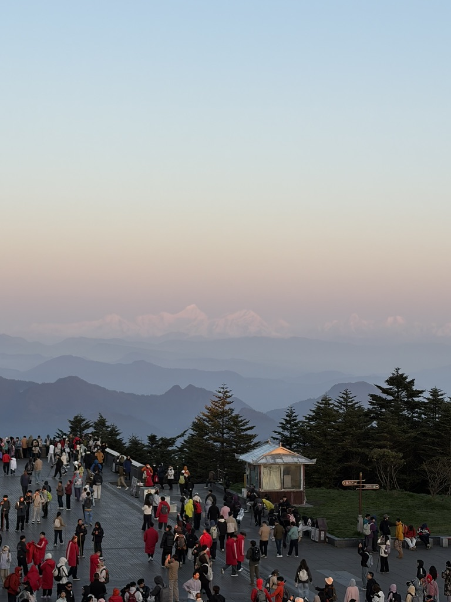

Personal Field Notes
把路上的光、生活里的疑问和认真想过的事写下来。
一间安静的中文博客，收集旅行、技术、AI 与日常观察。
Stories
最新文章

T
About
关于我
一个普通人，在互联网的角落里搭了个小地方写点东西。
没什么宏大的目标。只是觉得人活一辈子，总该留下点什么，哪怕只是一篇游记、几句碎碎念、几张路上拍的照片。这个世界很大，我来过，我想留下一点足迹。
Personal Field Notes
一间安静的中文博客，收集旅行、技术、AI 与日常观察。
Stories

About
一个普通人，在互联网的角落里搭了个小地方写点东西。
没什么宏大的目标。只是觉得人活一辈子，总该留下点什么，哪怕只是一篇游记、几句碎碎念、几张路上拍的照片。这个世界很大，我来过，我想留下一点足迹。